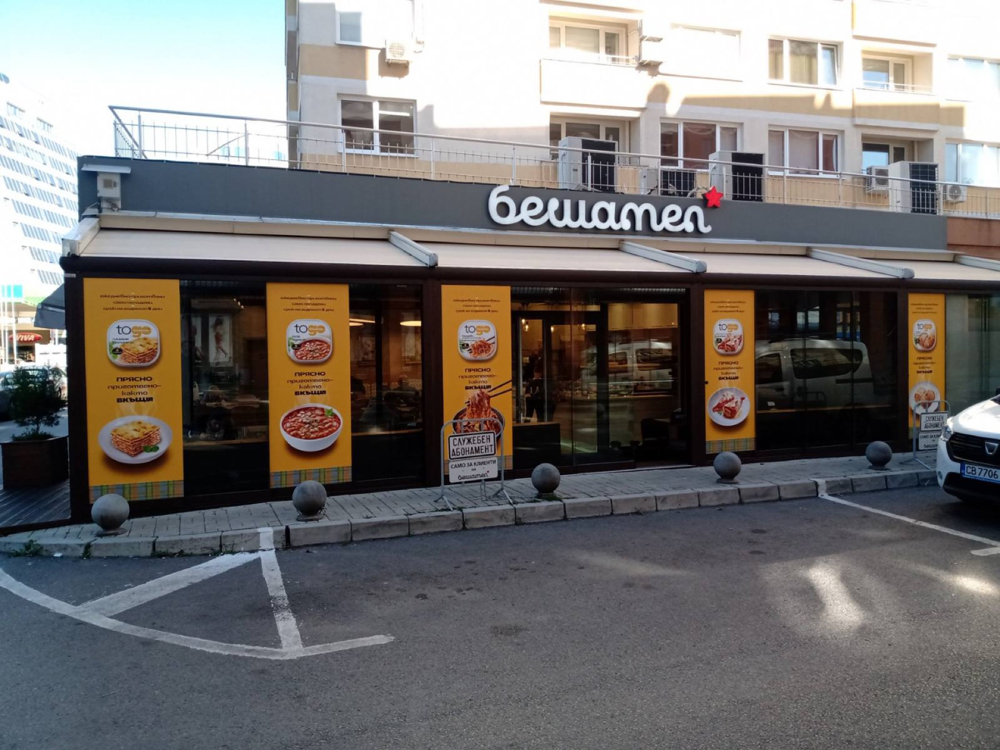
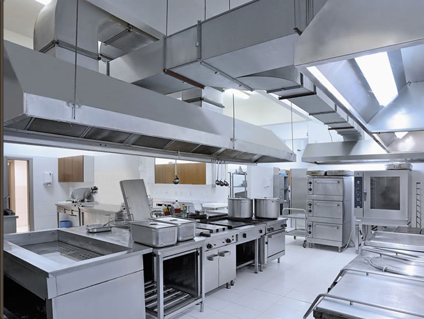
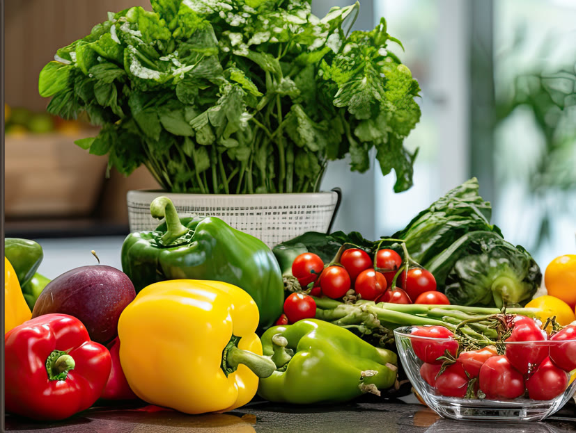
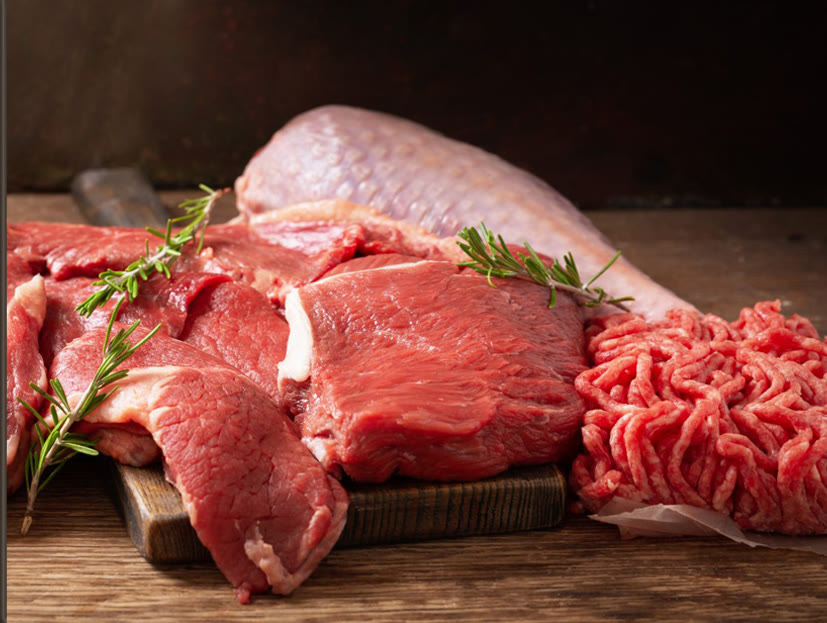
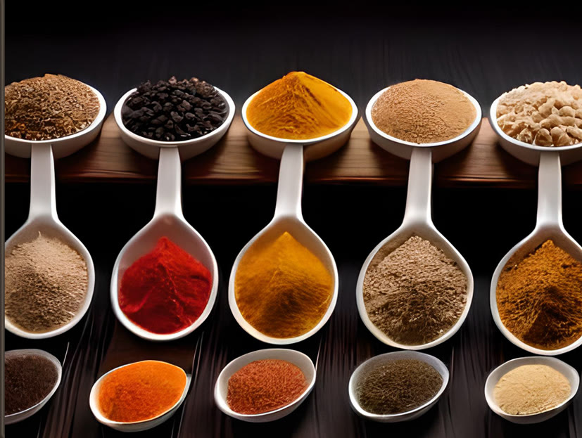
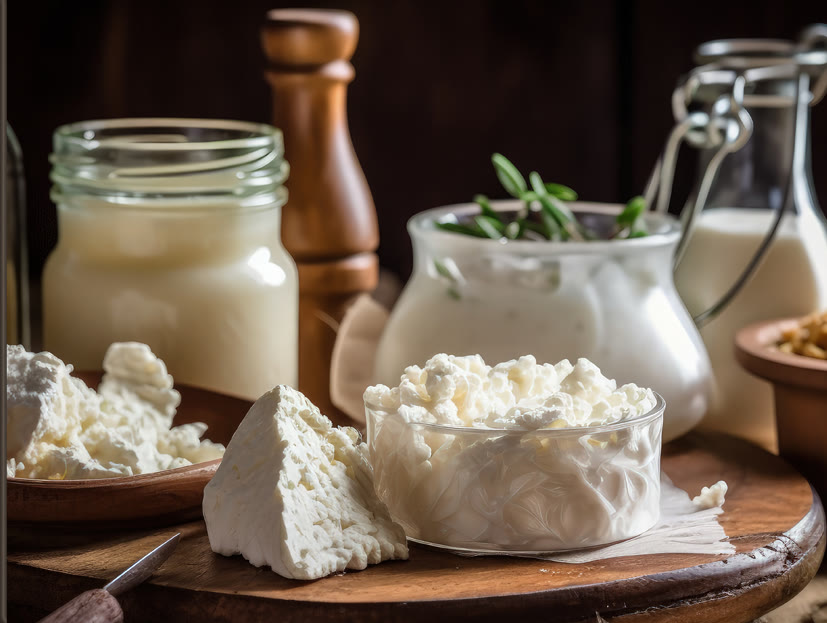
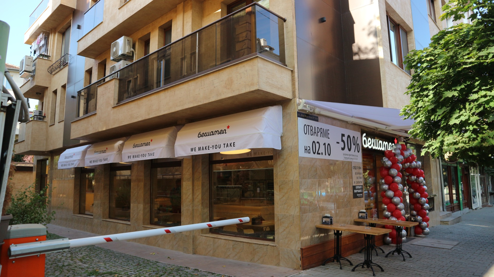
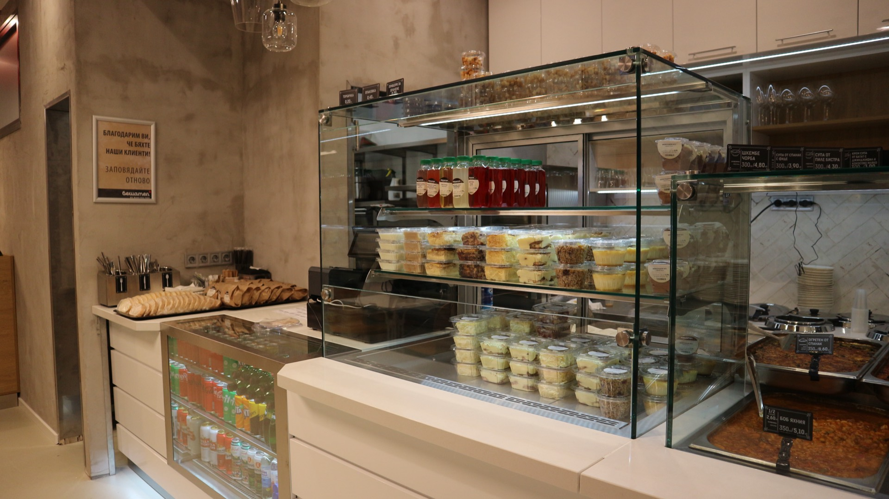
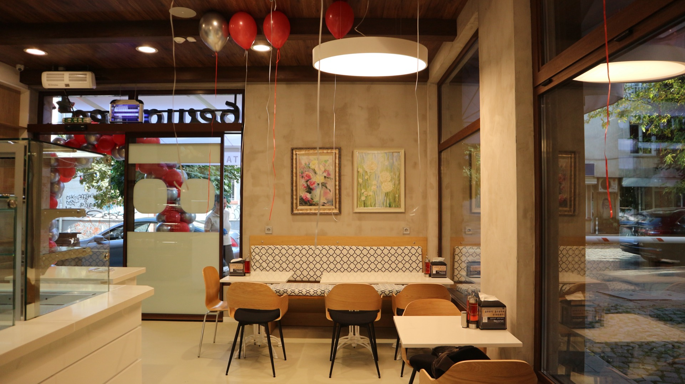

2019
Бешамел 1
бул. Христо Ботев 16А — първото заведение, 21 места.

От 2019 насам
Домашна храна, приготвена прясно всеки ден — с дисциплината на професионална кухня.
В Бешамел се стараем да зарадваме всички наши клиенти с вкусна домашна храна на достъпни цени. Времето и опитът ни научиха да ценим истински важните неща.
Вярваме, че храната не е само хранене, а преживяване. Затова пазаруваме всеки ден, готвим всяка сутрин и подреждаме всяка чиния така, сякаш е за нашата маса.
„Затова ние пазаруваме всеки ден, избираме най-добрите продукти, работим с най-новите технологии и приготвяме храната с отношение.“
Философията на БешамелКак започна всичко
От 2019 насам — една централна кухня и шест заведения из София. Следвай пътя — светлините пламват една по една.
оттук тръгва всичко, всяка сутрин
бул. Христо Ботев 16А — първото заведение, 21 места.
бул. Христо Ботев 15 — точно отсреща, с храна и за из път.
бул. България 49А, Мотописта — 40 места, най-големият ни салон.
ул. Д-р Атанас Москов 459 — стигаме до Младост 4.
ул. Цар Иван Асен II 36.
ул. Йерусалим 8 — най-новото заведение.
Моделът
Всяко ястие се приготвя в една централна кухня и всяка сутрин тръгва към шестте обекта. Затова Бешамел има един вкус — където и да седнеш.
Всяко ястие се готви от един екип, по една рецепта.
Приготвената храна тръгва рано с бусовете ни към шестте обекта.
Една доставка, една инспекция, един стандарт — всеки ден.
Занаятът

Шокови охладители, конвектомати, индукция — уреди от най-ново поколение. Най-важна е технологичната последователност, за която екипът преминава допълнително обучение.

Зареждаме всеки ден със зеленчуци, лично инспектирани от готвачите ни. Залагаме на доказани български производители.

Изключително строга селекция от доказани партньори. За да влезе в кухнята, месото минава през минимум трима души от екипа.

Селектирани подправки от България, Средиземноморието и Азия. Над 45% са директен внос от държавата производител.

Прясно и кисело мляко, кашкавал, сирена и сметана — в основата на кухнята ни, подбирани със същото внимание.
Безкомпромисни сме към пържените ястия — мазнината се сменя всеки ден и е различна за всяко ястие.
Денят на Бешамел
Пазаруваме всеки ден. Зеленчуците се инспектират лично от готвачите.
Днешното меню — различно от вчерашното, приготвено същата сутрин.
Всички ястия и салати — защото прясното не се пази за утре.
Нищо не остава за утре. Утрешното меню започва от нулата.
Нашите заведения
бул. Христо Ботев 16А — първото ни заведение, 21 места.
бул. Христо Ботев 15 — точно отсреща, с храна и за из път.
бул. България 49А, Мотописта — най-големият ни салон, 40 места.
ул. Д-р Атанас Москов 459 — стигаме до Младост 4.
ул. Цар Иван Асен II 36.
ул. Йерусалим 8 — най-новото в семейството.
Атмосферата


